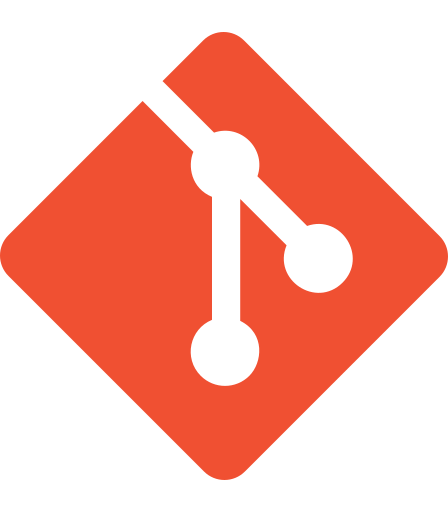

Understand
Business objectives, stakeholders, processes, rules, data, and constraints.
Ten years of enterprise delivery experience across requirements, configuration, integration, validation, migration, and release support.
Business objectives, stakeholders, processes, rules, data, and constraints.
Requirements, workflows, interfaces, decision logic, and acceptance criteria.
Backlog support, validation, UAT, release readiness, and production follow-through.
Grouped by how the tools support analysis, integration, delivery, collaboration, and AI-assisted work.

Sanitized examples of configuration, integration, delivery, automation, validation, and migration work.
Configurable product structures, business rules, validation, pricing, and ERP handoff.
Structured product data movement across transformation, API, lifecycle, and ERP layers.
Traceable delivery from business need through backlog, testing, release evidence, and production support.
Reusable extraction, transformation, validation, refresh, and reporting workflow.
Evidence-led analysis of system behaviour, logs, structured files, defects, and validation results.
Source-to-target mapping, business-rule reconciliation, validation, and cutover readiness.